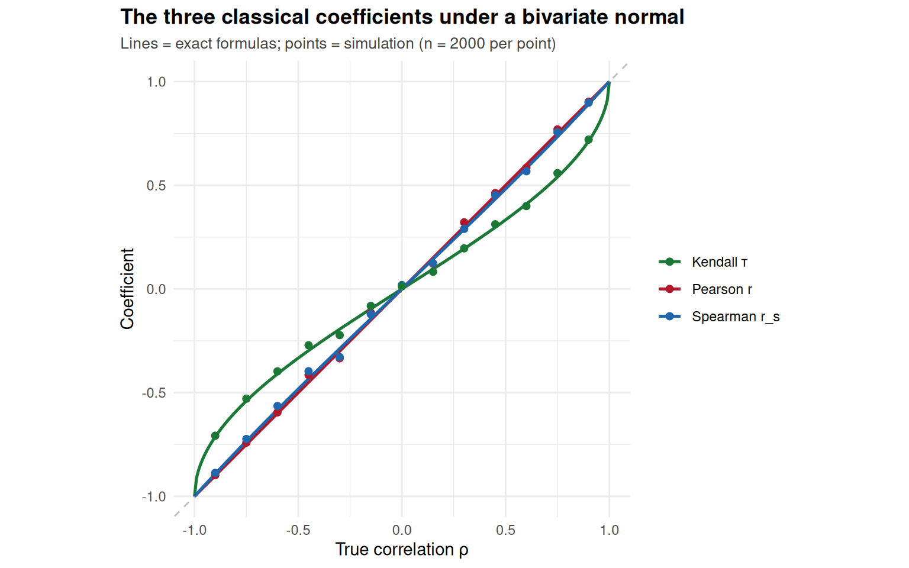
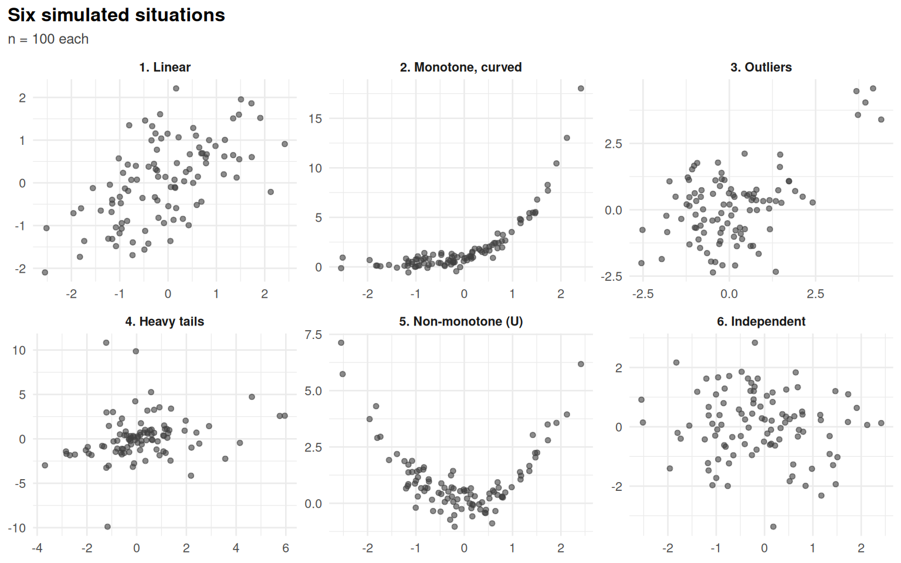
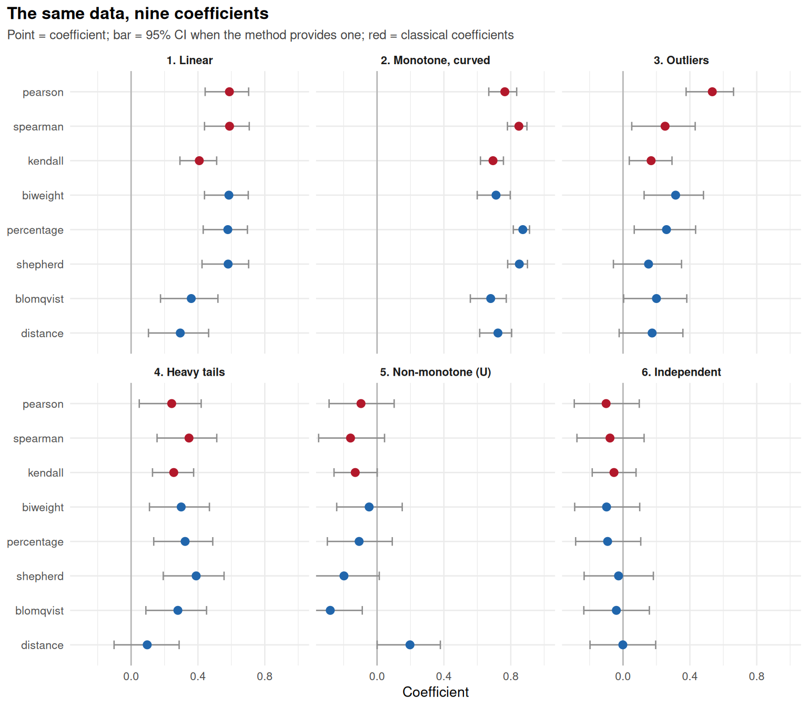
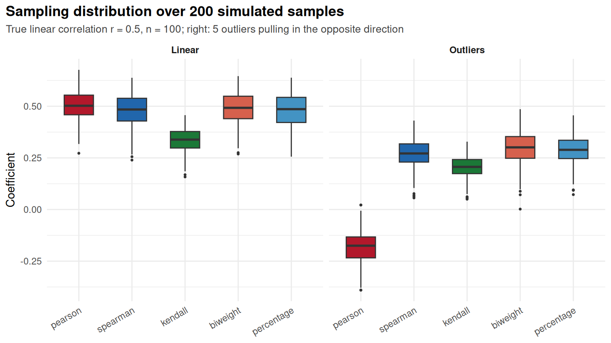
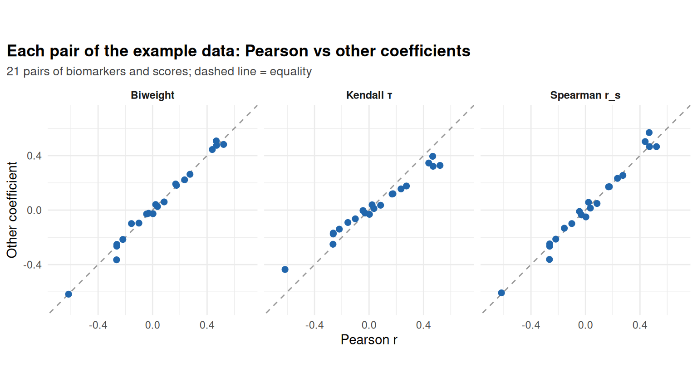
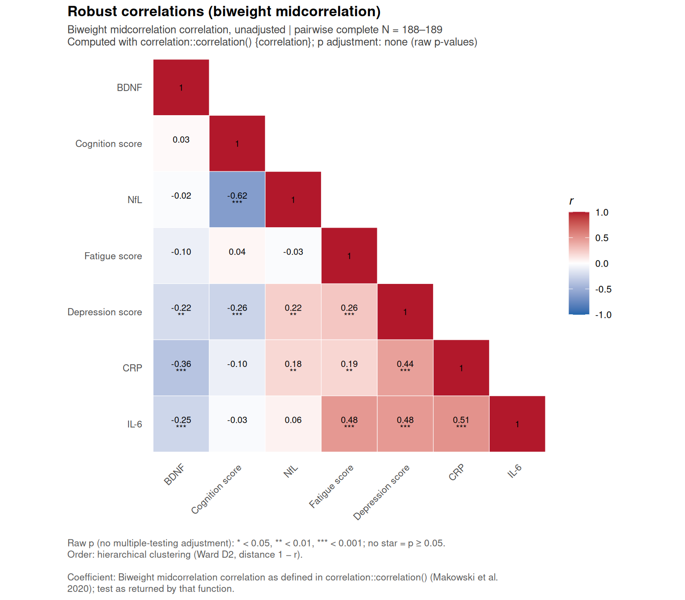

Comparer les coefficients de corrélation
Pearson, Spearman, Kendall, biweight, distance… Tous ces coefficients valent 0 en l’absence d’association et ±1 pour une association parfaite, mais ils ne mesurent pas la même chose. Cette vignette les compare en théorie, puis sur des données simulées où l’on connaît la vérité. Les calculs viennent de stats::cor() et du package correlation (Makowski et al. 2020).
En théorie
| Coefficient | Ce qu’il mesure | Sensible aux valeurs extrêmes | Invariant par transformation monotone | Voit une relation non monotone |
|---|---|---|---|---|
| Pearson r | association linéaire | oui, fortement | non | non |
| Spearman r_s | association monotone (Pearson sur les rangs) | peu | oui | non |
| Kendall τ | paires concordantes − discordantes | peu | oui | non |
| Biweight midcorrelation | association linéaire, observations éloignées de la médiane moins pondérées | peu | non | non |
| Percentage bend | association linéaire, un pourcentage des observations les plus éloignées de la médiane moins pondéré (20 %) | peu | non | non |
| Pi de Shepherd | Spearman après retrait des valeurs aberrantes (distance de Mahalanobis bootstrappée) | très peu | non (le repérage des valeurs aberrantes dépend de l’échelle) | non |
| Blomqvist β | concordance par rapport aux médianes (quadrants) | très peu | oui | non |
| Hoeffding D | dépendance générale, à partir des rangs | peu | oui | oui |
| Corrélation de distance | dépendance générale ; 0 seulement en cas d’indépendance | oui | non | oui |
Les formules des trois coefficients classiques (notation de Makowski et al. 2020) :
\[r_{xy} = \frac{\mathrm{cov}(x, y)}{SD_x\, SD_y}, \qquad r_{s,xy} = \frac{\mathrm{cov}(\mathrm{rank}_x, \mathrm{rank}_y)}{SD(\mathrm{rank}_x)\, SD(\mathrm{rank}_y)}, \qquad \tau_{xy} = \frac{2}{n(n-1)}\sum_{i<j}\mathrm{sign}(x_i - x_j)\,\mathrm{sign}(y_i - y_j).\]
Pearson, Spearman et Kendall ne sont pas sur la même échelle
Pour une loi normale bivariée de corrélation ρ, les trois coefficients sont liés par des formules exactes :
\[\tau = \frac{2}{\pi}\arcsin(\rho), \qquad r_s = \frac{6}{\pi}\arcsin\!\left(\frac{\rho}{2}\right).\]
Spearman est donc très proche de Pearson, alors que Kendall est nettement plus petit : un τ de 0,33 correspond à un r de 0,5. On ne compare pas un τ à un r.
rho <- seq(-1, 1, by = 0.01)
theo <- rbind(data.frame(rho = rho, value = rho, coef = "Pearson r"),
data.frame(rho = rho, value = 6 / pi * asin(rho / 2), coef = "Spearman r_s"),
data.frame(rho = rho, value = 2 / pi * asin(rho), coef = "Kendall τ"))
set.seed(1)
sim <- do.call(rbind, lapply(seq(-0.9, 0.9, by = 0.15), function(r) {
x <- rnorm(2000); y <- r * x + sqrt(1 - r^2) * rnorm(2000)
data.frame(rho = r, value = c(cor(x, y), cor(x, y, method = "spearman"), cor(x, y, method = "kendall")),
coef = c("Pearson r", "Spearman r_s", "Kendall τ"))
}))
cols <- c("Pearson r" = "#B2182B", "Spearman r_s" = "#2166AC", "Kendall τ" = "#1B7837")
ggplot(theo, aes(rho, value, colour = coef)) +
geom_abline(linetype = "dashed", colour = "grey75") +
geom_line(linewidth = 0.9) +
geom_point(data = sim, size = 1.8) +
scale_colour_manual(values = cols) +
coord_equal() +
labs(title = "The three classical coefficients under a bivariate normal",
subtitle = "Lines = exact formulas; points = simulation (n = 2000 per point)",
x = "True correlation ρ", y = "Coefficient", colour = NULL) +
theme_pub(11)
En pratique : six situations
On simule n = 100 individus dans six situations typiques.
set.seed(2026)
n <- 100
x <- rnorm(n)
scen <- list(
"1. Linear" = data.frame(x = x, y = 0.6 * x + 0.8 * rnorm(n)),
"2. Monotone, curved" = data.frame(x = x, y = exp(1.2 * x) + 0.5 * rnorm(n)),
"3. Outliers" = { y <- rnorm(n); i <- 1:5; x2 <- x; x2[i] <- 4 + rnorm(5, 0, 0.3); y[i] <- 4 + rnorm(5, 0, 0.3)
data.frame(x = x2, y = y) },
"4. Heavy tails" = { u <- rt(n, df = 2); data.frame(x = u, y = 0.6 * u + 0.8 * rt(n, df = 2)) },
"5. Non-monotone (U)" = data.frame(x = x, y = x^2 + 0.5 * rnorm(n)),
"6. Independent" = data.frame(x = x, y = rnorm(n)))
pts <- do.call(rbind, lapply(names(scen), function(s) cbind(scenario = s, scen[[s]])))
ggplot(pts, aes(x, y)) +
geom_point(alpha = 0.6, size = 1.3, colour = "grey25") +
facet_wrap(~ scenario, scales = "free", ncol = 3) +
labs(title = "Six simulated situations", subtitle = "n = 100 each", x = NULL, y = NULL) +
theme_pub(10)
- 1 : la situation idéale de Pearson. 2 : relation monotone mais courbe. 3 : aucune relation, sauf 5 individus extrêmes alignés. 4 : relation linéaire, mais distributions à queues lourdes. 5 : relation forte mais non monotone. 6 : aucune relation.
Chaque coefficient dans chaque situation
methods <- c("pearson", "spearman", "kendall", "biweight", "percentage", "shepherd",
"blomqvist", "hoeffding", "distance")
one <- function(dat, m) {
out <- tryCatch(as.data.frame(correlation::cor_test(dat, "x", "y", method = m)), error = function(e) NULL)
if (is.null(out)) return(c(est = NA, lo = NA, hi = NA))
est <- intersect(c("r", "rho", "tau"), names(out))[1]
if (is.na(est)) return(c(est = NA, lo = NA, hi = NA))
c(est = out[[est]][1],
lo = if ("CI_low" %in% names(out)) out$CI_low[1] else NA,
hi = if ("CI_high" %in% names(out)) out$CI_high[1] else NA)
}
tab <- do.call(rbind, lapply(names(scen), function(s) do.call(rbind, lapply(methods, function(m) {
v <- one(scen[[s]], m); data.frame(scenario = s, method = m, est = v[["est"]], lo = v[["lo"]], hi = v[["hi"]])
}))))
missing <- unique(tab$method[is.na(tab$est)])
if (length(missing)) message("Not available in this installation: ", paste(missing, collapse = ", "))
#> Not available in this installation: hoeffding
tab <- tab[!is.na(tab$est), ]
tab$method <- factor(tab$method, levels = rev(methods))
ggplot(tab, aes(est, method)) +
geom_vline(xintercept = 0, colour = "grey70") +
geom_errorbar(aes(xmin = lo, xmax = hi), width = 0.25, colour = "grey55", orientation = "y", na.rm = TRUE) +
geom_point(aes(colour = method %in% c("pearson", "spearman", "kendall")), size = 2.4, show.legend = FALSE) +
scale_colour_manual(values = c(`TRUE` = "#B2182B", `FALSE` = "#2166AC")) +
facet_wrap(~ scenario, ncol = 3) +
coord_cartesian(xlim = c(-0.3, 1)) +
labs(title = "The same data, nine coefficients",
subtitle = "Point = coefficient; bar = 95% CI when the method provides one; red = classical coefficients",
x = "Coefficient", y = NULL) +
theme_pub(10)
Ce qu’on y lit :
- Linéaire : tous les coefficients détectent la relation, mais à des niveaux différents (τ et β plus petits, comme prévu par la théorie).
- Monotone courbe : Spearman et Kendall restent élevés ; Pearson sous-estime la force d’une relation pourtant parfaitement ordonnée.
- Valeurs extrêmes : 5 individus suffisent à créer un r de Pearson important à partir de rien ; Spearman, Kendall et surtout les coefficients robustes (biweight, percentage bend, Shepherd) y résistent.
- Queues lourdes : Pearson devient instable ; les coefficients de rangs et robustes donnent une image plus fidèle.
- Non monotone : Pearson, Spearman et Kendall sont proches de 0 alors que y dépend fortement de x ; seules la corrélation de distance et D de Hoeffding le voient.
- Indépendance : tous proches de 0.
Variabilité d’un échantillon à l’autre
Un coefficient robuste n’est pas seulement moins biaisé par les valeurs extrêmes : il varie aussi moins d’un échantillon à l’autre. On recommence 200 fois les situations « linéaire » et « valeurs extrêmes » avec cinq coefficients rapides.
set.seed(7)
fast <- c("pearson", "spearman", "kendall", "biweight", "percentage")
draw <- function(type) {
x <- rnorm(n); y <- 0.5 * x + sqrt(1 - 0.25) * rnorm(n)
if (type == "Outliers") { i <- 1:5; x[i] <- -4 + rnorm(5, 0, 0.3); y[i] <- 4 + rnorm(5, 0, 0.3) }
data.frame(x = x, y = y)
}
rep_tab <- do.call(rbind, lapply(c("Linear", "Outliers"), function(type)
do.call(rbind, replicate(200, {
dat <- draw(type)
data.frame(type = type, method = fast, est = vapply(fast, function(m) one(dat, m)[["est"]], numeric(1)))
}, simplify = FALSE))))
rep_tab$method <- factor(rep_tab$method, levels = fast)
ggplot(rep_tab, aes(method, est, fill = method)) +
geom_boxplot(width = 0.55, outlier.size = 0.6, show.legend = FALSE) +
facet_wrap(~ type) +
scale_fill_manual(values = c(pearson = "#B2182B", spearman = "#2166AC", kendall = "#1B7837",
biweight = "#D6604D", percentage = "#4393C3")) +
labs(title = "Sampling distribution over 200 simulated samples",
subtitle = "True linear correlation r = 0.5, n = 100; right: 5 outliers pulling in the opposite direction",
x = NULL, y = "Coefficient") +
theme_pub(11) + theme(axis.text.x = element_text(angle = 30, hjust = 1))
Avec cinq valeurs extrêmes placées à contre-sens, le r de Pearson s’effondre (et change parfois de signe), tandis que biweight et percentage bend restent proches de la valeur sans valeurs extrêmes.
Transformation monotone
Prendre le logarithme d’une variable positive (fréquent pour CRP ou IL-6) change le r de Pearson, mais pas Spearman ni Kendall, qui ne dépendent que des rangs :
d <- simulate_cor_data(200)
ok <- complete.cases(d$CRP, d$depression)
sapply(c(pearson = "pearson", spearman = "spearman", kendall = "kendall"), function(m)
c(raw = cor(d$CRP[ok], d$depression[ok], method = m),
log = cor(log(d$CRP[ok]), d$depression[ok], method = m)))
#> pearson spearman kendall
#> raw 0.4382662 0.5028931 0.3456777
#> log 0.5157842 0.5028931 0.3456777Dans corrkit
Toutes les méthodes passent par cor_compute(method = ...). Pearson, Spearman et Kendall sont disponibles partout, y compris pour les corrélations partielles ; les autres passent par le package correlation et n’ont pas de version partielle.
lab <- attr(d, "labels")
vars <- c("CRP", "IL6", "BDNF", "NfL", "depression", "fatigue", "cognition")
ms <- c(pearson = "pearson", spearman = "spearman", kendall = "kendall", biweight = "biweight")
all_r <- do.call(rbind, lapply(names(ms), function(m) {
L <- cor_compute(d, vars, method = ms[[m]])$table
data.frame(pair = paste(L$X, L$Y), method = m, r = L$r)
}))
wide <- reshape(all_r, idvar = "pair", timevar = "method", direction = "wide")
cmp <- rbind(data.frame(pair = wide$pair, pearson = wide$r.pearson, other = wide$r.spearman, method = "Spearman r_s"),
data.frame(pair = wide$pair, pearson = wide$r.pearson, other = wide$r.kendall, method = "Kendall τ"),
data.frame(pair = wide$pair, pearson = wide$r.pearson, other = wide$r.biweight, method = "Biweight"))
ggplot(cmp, aes(pearson, other)) +
geom_abline(linetype = "dashed", colour = "grey60") +
geom_point(colour = "#2166AC", size = 2) +
facet_wrap(~ method) + coord_equal(xlim = c(-0.7, 0.7), ylim = c(-0.7, 0.7)) +
labs(title = "Each pair of the example data: Pearson vs other coefficients",
subtitle = "21 pairs of biomarkers and scores; dashed line = equality", x = "Pearson r", y = "Other coefficient") +
theme_pub(11)
Sur ces données, Spearman et biweight restent proches de Pearson, et Kendall est systématiquement plus petit, comme le prévoit la théorie. La heatmap d’une méthode robuste se lit comme les autres ; sa légende indique la méthode et le moteur :
plot(cor_compute(d, vars, method = "biweight", labels = lab),
title = "Robust correlations (biweight midcorrelation)")
Références
- Makowski D, Ben-Shachar MS, Patil I, Lüdecke D (2020). Methods and algorithms for correlation analysis in R. Journal of Open Source Software 5(51):2306. doi:10.21105/joss.02306
- Wilcox RR (1994). The percentage bend correlation coefficient. Psychometrika 59(4):601-616.
- Schwarzkopf DS, De Haas B, Rees G (2012). Better ways to improve standards in brain-behavior correlation analysis. Frontiers in Human Neuroscience 6:200.
- Székely GJ, Rizzo ML, Bakirov NK (2007). Measuring and testing dependence by correlation of distances. Annals of Statistics 35(6):2769-2794.
- Hoeffding W (1948). A non-parametric test of independence. Annals of Mathematical Statistics 19(4):546-557.
- Blomqvist N (1950). On a measure of dependence between two random variables. Annals of Mathematical Statistics 21(4):593-600.
Comment choisir
plot_cor_pair()), ou si l’on veut un lien direct avec une régression linéaire.